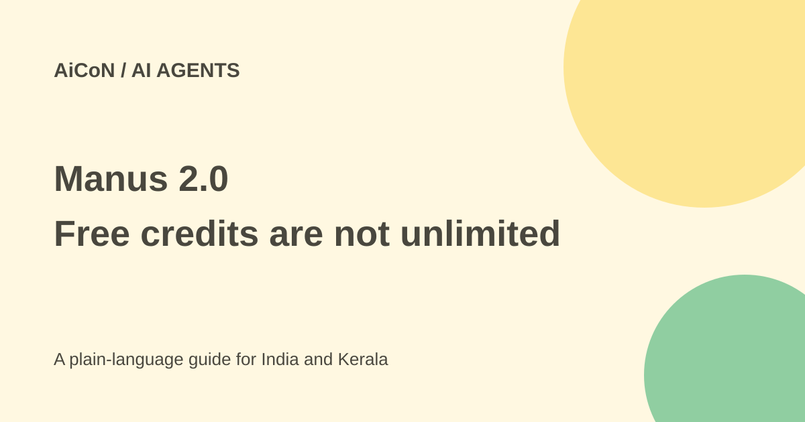

Manus 2.0: Free limits, Cascade and Cloud Computer costs
Manus 2.0 adds a new agent engine and more workspaces. Its Free plan is limited to Lite in Agent Mode, and a persistent Cloud Computer is a separate paid service.

What is new in Manus 2.0?
The official launch describes Cascade as a rebuilt agent harness, the system that connects a model to tools and project work. Manus Studio adds workspaces for documents, slides, websites, code, video and games. Automations can begin from events in connected services, not only a fixed schedule.
The launch gives examples such as a new email, calendar event, Slack message or Notion update triggering work. A connection and trigger still need the right permissions and limits. Do not authorise broad account access for a test that only needs one small workflow.
What is actually free?
The current membership help says Free users have Chat Mode and Manus 2.0 Lite in Agent Mode. Pro adds Manus 2.0 and Max alongside Lite. The Free plan lists one concurrent task and two scheduled automations.
The plan page advertises 300 daily refresh credits. The separate credit rules add an important limit: Free users' consumption of daily refresh credits is capped at 1,500 per month, and those daily credits can be used only for Lite. Do not multiply 300 by every day of the month and call that an unlimited usable allowance.
Credits pay for task work such as model processing, computing environments and third-party APIs. A credit count is not a fixed number of complete projects; complexity and duration affect consumption.
Paid membership and INR comparison
The checked help page says Pro starts at USD 20 monthly with 4,000 monthly credits. At the approximate ₹96.43-per-dollar reference used in this archive, that is about ₹1,929 before tax and conversion differences. It advertises an annual-billing discount; check the upfront total rather than confusing a monthly equivalent with a month-to-month bill.
Unused monthly subscription credits reset each cycle, including under annual plans. Add-on credits have different rules and need an active paid subscription. Review your actual offer and account balance before paying for a task.
Cloud Computer is separately billed
A Cloud Computer is a persistent Ubuntu server for a project that needs to keep running outside an active session. The help page lists Standard at USD 30 monthly, about ₹2,893, with two vCPUs, 4 GB RAM and 70 GB storage. Advanced is USD 50 monthly, about ₹4,822, with two vCPUs, 8 GB RAM and 120 GB storage.
These are approximate INR comparisons, not India checkout totals. An ordinary task credit allowance does not mean a dedicated server is free. Confirm the actual plan and any required membership before purchase.
The billing help says stopping payment shuts down the server and deletes its working files, installed tools and databases. Previously delivered chat outputs remain, but that does not back up a live database. Make a usable backup before cancelling. Upgrading can briefly restart running services.
How to try it sensibly
- Start on the official site and check the active plan and credit rules.
- Choose a small task without private data or broad integrations.
- Review the output and record the credit cost.
- For an automation, define the event, permitted action and failure reporting.
- Use narrow permissions and test before allowing work on important accounts.
- Only add a persistent server when the project actually needs one.
- Back up files and verify cancellation terms before ending paid services.
Performance and related-product limits
The launch says Cascade used 23.2% fewer tokens, finished 28.2% faster and cost 32% less in one tested configuration. These are vendor measurements, not guaranteed savings for every prompt, plan or project.
The launch also introduces Cue, a separate early-access product with invite codes. Cue's free early-access offer should not be used as evidence that all Manus 2.0 features or Cloud Computers are free. Product names and billing boundaries matter.
What changed since the original AiCoN post?
This guide adds Free Lite restrictions, the daily-credit monthly consumption cap, membership pricing and separate server costs. It also adds the data-loss consequence of stopping Cloud Computer payment, which matters for any long-running project.
Frequently asked questions
Does Free include full Manus 2.0 Agent Mode?
The checked help limits Free Agent Mode to Lite.
Are daily refresh credits unlimited each month?
No. The Free consumption cap is 1,500 monthly.
Does cancelling a server preserve its database?
The help says server files and databases are deleted. Back up first.
Sources: Official Manus 2.0 launch · Membership plans · Credit consumption and expiry · Cloud Computer prices and cancellation. Checked 7 October 2026.